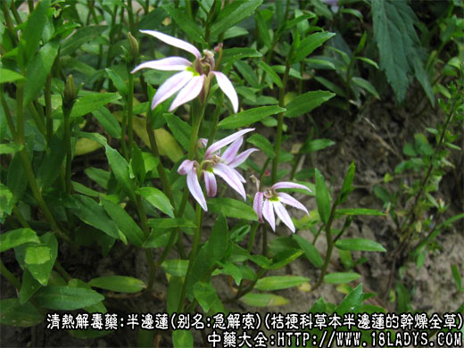
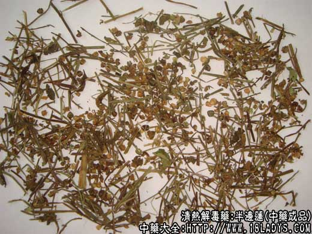
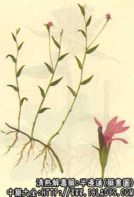

半边莲为少常用中药，始载《本草纲目》。
别名：急解索、蛇利草、细米草、蛇舌草、鱼尾花、半边菊。
来源：为桔梗科多年生草本植物半边莲的干燥全草，野生。
植物形态：多年生细小草本，高10余厘米，茎纤细铺匐或直立。叶互生，长椭圆形或线形，全缘或浅波状，几无柄。花单生于叶腋或枝顶，具长柄，萼2唇形5裂。花冠2唇形，上唇2裂深至基部，下唇3裂均裂向一边，呈半个花状故名“半边莲”。朔果成熟后2瓣裂。
产地：主产于湖南、江西、浙江、四川等省，江南地区多有分布。
性状鉴别：全草（包括纤细的须根、根茎及地上茎、叶、花冠等）。已皱缩成不规则的团块状，灰绿色或微带紫色，花冠叶片已卷缩破碎。气微，味微咸而带辛。
以灰绿色，无杂草者为佳。
主要成分：含半边莲素，为类似生物硷的黄色结晶体。另含有山梗菜硷等。
药理作用：1、利尿：作用显著而持久，能增加尿量和水的排出，有效成分为半边莲素；2、解毒消肿。
炮制：切咀、生用。
性味：辛、平。
归经：入心、小肠经。
功能：清热解毒、利尿消肿。
主治：虫蛇咬伤，诸疮肿毒，腹水涨满，小便不利，肝硬化等症。
临床应用：1、治疗毒蛇咬伤，可能通过利尿和轻泻加速毒素排泄。适宜于治疗眼镜蛇、青竹蛇、蝰蛇咬伤，可用鲜半边莲120g，捣烂取汁，热酒送服；或干品30～60g，水煎服。也可其它清热解毒药通用，方如三黄半边莲汤。外用则以鲜半边莲一把，加盐捣烂成泥状，围敷伤口部。
2、治晚期血吸虫病，通过利尿，使腹水减轻，症状改善。每日30～60g水煎，分二次用。
用量：利水用干品15～30g，鲜品90g，治蛇咬伤用干品30～90g，鲜品90～120g。